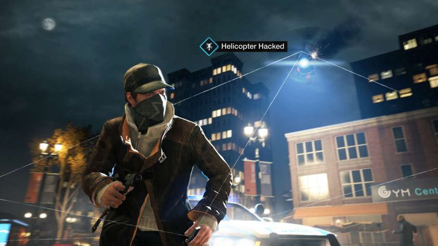
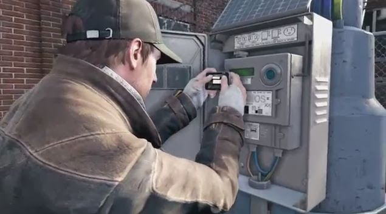
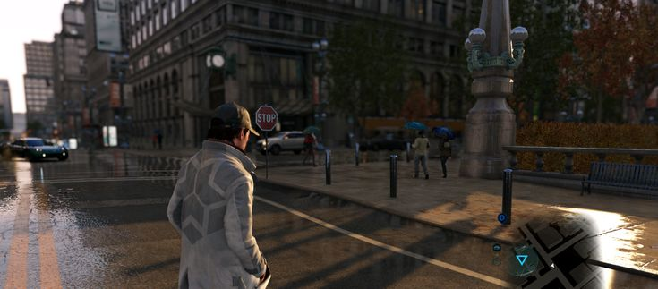

Hack San Francisco, join DedSec and fight against corrupt corporations in a massive open world.
4.9 / 5
Open World
San Francisco
Hacking, Driving, Missions
Watch Dogs 2 follows Marcus Holloway and the DedSec hacker group as they take down powerful corporations using hacking skills, gadgets and teamwork across a vibrant San Francisco open world.
OS: Windows 10
CPU: Intel Core i5-2400S
RAM: 6 GB
GPU: GTX 660
Storage: 50 GB
OS: Windows 10/11
CPU: Intel Core i5-3470
RAM: 8 GB
GPU: GTX 970
Storage: 50 GB SSD


